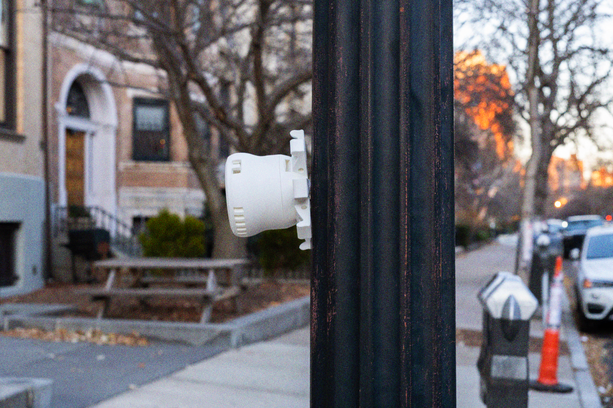
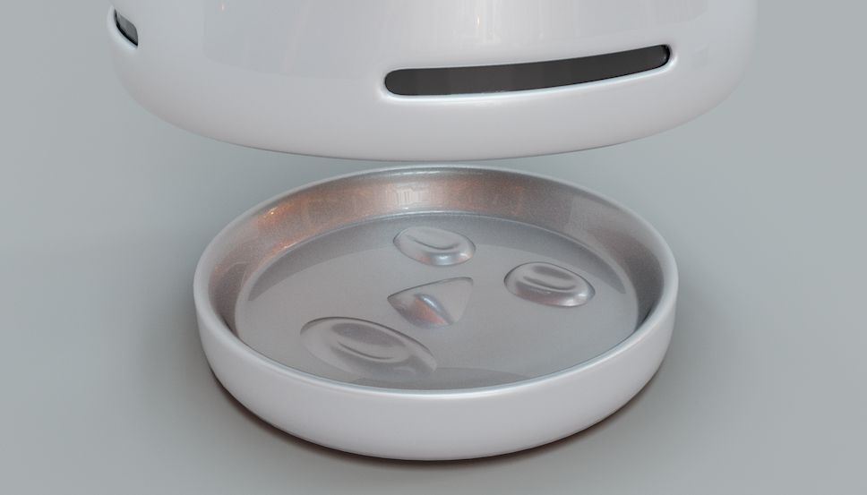

Selected Work
04 projects
Command-Level Dashboards
Decision-making tools for engineers & planners

Sensing Garden
AI-enabled biodiversity monitoring hardware

Octopus
Modular, urban sensing device

[ vleur ]Vleur
Transforming food waste into personal care products
No projects match this filter.